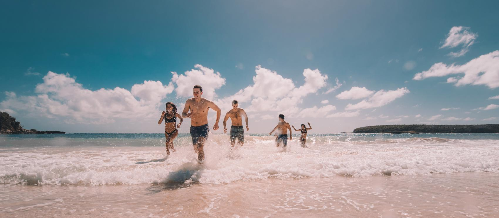
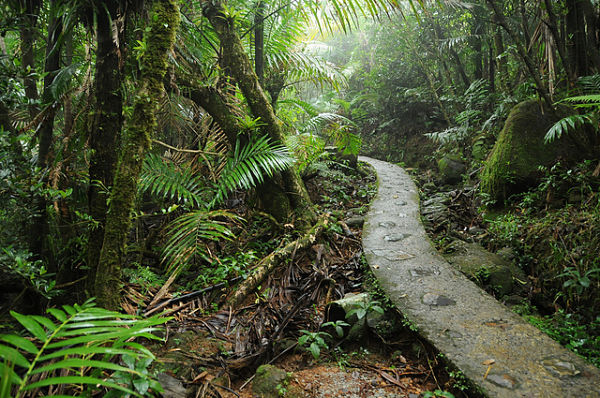

En Puerto Rico, el turismo es uno de las actividades por la que la isla es mas notable. Sin embargo, el turismo en Puerto Rico es muy centrado en el area norte, dejando a los demas municipios de la isla sin los beneficios que trae el turismo a la isla
Visitando las areas menos reconocidas de la isla y estimulando la economía.
 Playa en Puerto Rico 
¡Haz click en un municipio!